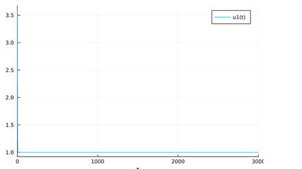
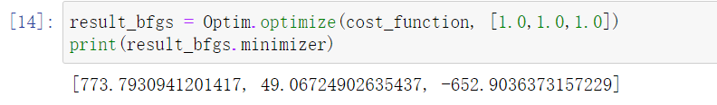

微分方程参数辨识实例
Contents：微分方程参数辨识、优化、DiffEqParamEstim
Contributor: YJY
Email:522432938@qq.com
如有错误，请批评指正。
DEPE = DiffEqParamEstim.jl(Differential Equation Parameters Estimate)
DiffEqParamEstim.jl是计算微分方程参数估计的软件包。
微分方程参数辨识问题
在JuMP非线性参数辨识实例与MTK非线性参数辨识实例中介绍了参数辨识问题的形式与求解工具。求解的问题的数学形式为一般方程：
\[y = ax^2+sin(bx)\\a=1.5,b=0.8\]
DEPE则是针对另外一种数学形式进行参数辨识求解的工具包——微分方程形式。例如，如下问题：
\[\frac{dy}{dt} = at^2+sin(bt)\\a=1.5,b=0.8\]
对于这样一个微分问题。假设我们并不知道参数$a,b$的值是多少。同样只能过实验和测量获得对应时间点上$y$的观测值。参数辨识需要解决的问题是：根据t，y观测值。反推出$a,b$的值。与前面解决的问题不同的是，它是微分方程形式。相同的是，它们的核心逻辑是“优化”。
要求解这样一个含有微分方程的参数辨识问题，可以很自然地想到：将微分方程的原函数求出来，再进行常规方程的参数辨识，问题就解决了。但是这有一个前提——能够求出原函数。
DEPE的解决方式是，直接将微分方程离散，通过离散后的节点直接构造优化问题，进行求解。这样就避免了求解原函数问题。
离散的概念
离散是微分方程数值解法中的一个概念。例如，求解：$\frac{dy}{dt} = y,t\in(0,1)$
具体的方法是在$t\in(0,1)$选特定步长的点，假如选定步长为0.1，那么有：
\[t_{0}=0,t_{1}=0.1,t_{2}=0.2,...,t_{10}=1.0\]
同时，对于函数y，有
\[y_{n}-y_{n-1} = y_{n-1} * 0.1,n\in\{0,1,2,...,10\}\]
所以，对于微分方程问题，就转为了求$y_0$至$y_{10}$的值，也就是求出具体时间点上的函数值。问题就由一个连续的方程变成了有限个点上的函数值，这个过程就成为离散。
数值求解算法的精度与离散的方法有紧密关系。上面的离散方式可以换成：
\[y_{n}-y_{n-1} = y_{n} * 0.1,n\in\{0,1,2,...,10\}\]
区别不过不过是等式右端取$y_{n-1}$还是$y_{n}$的区别。但却是两种不同的方法——向前与向后差分，求解的精度也不一样。
此外，求解的精度还与步长等因素相关。更多理论，可以查阅《数值分析》一书。
微分参数辨识的优化表达
回到问题$\frac{dy}{dt} = at^2+sin(bt)$，已知系列观测值：$y_{real}$那么优化问题的数学表达为：
\[\underset{a,b}{\min}\sum_{i=0}^{n}(y_{real,i}-y_i)^2\\s.t.\hspace{5mm}y_{i+1}-y_{i}=at_i^2+sin(bt_i)\]
加热器实例
现有一个加热系统，由加热器、温度传感器、散热器构成。那么其控制方程为：
\[mc\frac{dT}{dt}=(-Sh(T-T_{out})+Q)*u(t-t_{0})\]
可以简单理解为：
\[温度变化=（加热-散热）*延迟函数\]
经过化简之后：
\[\begin{array}{c} \frac{d T}{d t}=\left(-\frac{T}{a}+\frac{b}{a}\right) * u(t-c) \\ u(t-c)=f(x)=\left\{\begin{array}{ll} 0, & x<0 \\1, & x \geq 0\end{array}\right.\end{array}\]
参数辨识的目标是辨识出a，b，c。
数据（数据在文档最后，以CSV文件格式保存到julia程序文件夹即可）的第二列中为加热功率，在方程模型中我们做了简化。由于功率只有0和100，在方程中我们简化为开关延时函数。所以第二列的原始数据后面并没有使用。
首先，实际的曲线如下：
using CSV,DataFrames,Plots
data = CSV.read("./codetest/data.csv",DataFrame)
########根据第一列与第三列数据画出图像#########
plot(data[:,1],data[:,3]) 
使用DE作为建模基础建立方程：
using DifferentialEquations
function fun(a)
if a>=0
1
else
0
end
end
function ff(u,p,t)
-u * fun( t- p[3])/p[1] + p[2] * fun( t- p[3])/p[1]
end- 这里采用了简写方式，省略了du，只包含微分方程右边的部分，因为只有一个微分变量所以可以简写。
- Fun表示函数u的作用，其本质是单位阶跃函数。
定义参数等要素：
u0=3.6
tspan = (0.0,3000.0)
p = [1.0,1.0,1.0]
prob = ODEProblem(ff,u0,tspan,p)需要留意p的值，这里p为选定的初始值。p的最终值是需要通过优化才能得到。优化目标为找到一组p，使得Loss方程的数值最小。
如果按照初值p = [1.0,1.0,1.0]求解，则可以得到如下结果：
sol = solve(prob, Tsit5())
plot(sol)
可以看到，相去甚远！说明这个初值与真实值相差很远。
通过DiffEqParamEstim构建优化模型：
using DiffEqParamEstim
realdata = data[:,3]
t= data[:,1]
cost_function = build_loss_objective(prob, Tsit5(), L2Loss(t, realdata),
maxiters=10000, verbose=false)其中，
- realdata是实际过程中的温度值向量
- t是实际采样过程中的温度点
- buildlossobjective 直接构建了Loss方程，其方法是L2Loss，即差的平方和。
求解优化问题：
using Optim
result_bfgs = Optim.optimize(cost_function, [1.0, 1.0, 1.0])
print(result_bfgs.minimizer)
Optim.optimize就是求解器，能求cost_function的最小值。
得到结果：

画图测试优化结果：
u0=3.6
tspan = (0.0,3000.0)
p = [779.0,49.0,-652.0]
prob = ODEProblem(ff,u0,tspan,p)
sol = solve(prob, Tsit5())
plot(sol)
似乎结果差得有点远！
再次优化：这是因为初值对优化问题造成的影响。由于初值与目标相去甚远，所以结果有些出入。p[3]应该是正数。把优化初值的第三项改为正数。再次优化
result_bfgs = Optim.optimize(cost_function, [773.0,49.0,652.0])
print(result_bfgs.minimizer)
在这个结果下，画出来的图像如图：

这是一个让人满意的结果！
多次优化是优化中一种常见的策略。某些问题的优化结果可能是一个局部最优解，这并不代表结果是错误的。所以，当优化结果不满意时，可以选择不同的初值进行优化求解。当初值离最优值越近，结果越准确。
全部代码：
using CSV, DataFrames, Plots
data = CSV.read("./codetest/data.csv", DataFrame)
data[!, 3]
plot(data[:, 1], data[:, 3]) #画出图像
using DifferentialEquations
function fun(a)
if a >= 0
1
else
0
end
end
function ff(u, p, t)
-u * fun(t - p[3]) / p[1] + p[2] * fun(t - p[3]) / p[1]
end
u0 = 3.6
tspan = (0.0, 3000.0)
p = [1.0, 1.0, 1.0]
prob = ODEProblem(ff, u0, tspan, p)
sol = solve(prob, Tsit5())
plot(sol)
using DiffEqParamEstim
realdata = data[:, 3]
t = data[:, 1]
cost_function = build_loss_objective(prob, Tsit5(), L2Loss(t, realdata),
maxiters=10000, verbose=false)
using Optim
result_bfgs = Optim.optimize(cost_function, [1.0, 1.0, 1.0])
print(result_bfgs.minimizer)
result_bfgs = Optim.optimize(cost_function, [773.0,49.0,652.0])
print(result_bfgs.minimizer)
u0=3.6
tspan = (0.0,3000.0)
p = [267.0,45.0,343.0]
prob = ODEProblem(ff,u0,tspan,p)
sol = solve(prob, Tsit5())
plot(sol)原始数据：
Time (min),Valve Position (% open),Temperature (degC)
0,0,3.6
5,0,3.7
10,0,3.6
15,0,3.7
20,0,3.6
25,0,3.7
30,0,3.7
35,0,3.6
40,0,3.6
45,0,3.6
50,0,3.6
55,0,3.7
60,0,3.7
65,0,3.7
70,0,3.7
75,0,3.5
80,0,3.6
85,0,3.7
90,0,3.5
95,0,3.6
100,0,3.5
105,0,3.7
110,0,3.6
115,0,3.7
120,0,3.6
125,0,3.7
130,0,3.7
135,0,3.7
140,0,3.7
145,0,3.7
150,0,3.7
155,0,3.5
160,0,3.6
165,0,3.6
170,0,3.6
175,0,3.7
180,0,3.6
185,0,3.6
190,0,3.7
195,0,3.6
200,0,3.5
205,0,3.6
210,0,3.5
215,0,3.7
220,0,3.6
225,0,3.5
230,0,3.7
235,0,3.7
240,0,3.6
245,0,3.7
250,0,3.5
255,0,3.7
260,0,3.7
265,0,3.6
270,0,3.6
275,0,3.7
280,0,3.7
285,0,3.7
290,0,3.5
295,0,3.7
300,0,3.5
305,0,3.5
310,0,3.7
315,0,3.6
320,0,3.7
325,0,3.6
330,0,3.7
335,0,3.5
340,0,3.5
345,0,3.5
350,0,3.7
355,0,3.7
360,0,3.6
365,0,3.6
370,0,3.7
375,0,3.5
380,0,3.7
385,0,3.5
390,0,3.7
395,0,3.6
400,100,3.7
405,100,14.9
410,100,18.2
415,100,19.2
420,100,19.9
425,100,20.1
430,100,20.8
435,100,21.0
440,100,21.3
445,100,21.4
450,100,21.5
455,100,22.0
460,100,21.8
465,100,21.8
470,100,21.9
475,100,21.5
480,100,21.7
485,100,21.2
490,100,20.7
495,100,20.3
500,100,20.3
505,100,20.1
510,100,21.2
515,100,22.8
520,100,23.9
525,100,24.2
530,100,24.9
535,100,25.7
540,100,26.4
545,100,26.5
550,100,26.7
555,100,27.3
560,100,27.6
565,100,27.5
570,100,27.5
575,100,27.7
580,100,27.8
585,100,27.8
590,100,27.9
595,100,27.9
600,100,28.0
605,100,28.2
610,100,28.2
615,100,28.5
620,100,28.7
625,100,28.9
630,100,29.0
635,100,29.2
640,100,29.7
645,100,29.8
650,100,30.1
655,100,30.4
660,100,30.5
665,100,30.9
670,100,31.6
675,100,31.8
680,100,32.2
685,100,32.7
690,100,32.8
695,100,33.0
700,100,33.4
705,100,33.8
710,100,34.0
715,100,34.6
720,100,34.8
725,100,35.2
730,100,35.4
735,100,35.7
740,100,36.0
745,100,36.6
750,100,36.8
755,100,36.9
760,100,37.3
765,100,37.5
770,100,37.7
775,100,37.9
780,100,37.9
785,100,38.3
790,100,38.2
795,100,38.4
800,100,38.7
805,100,38.8
810,100,39.1
815,100,39.2
820,100,39.2
825,100,39.4
830,100,39.4
835,100,39.3
840,100,39.5
845,100,39.5
850,100,39.7
855,100,39.7
860,100,39.8
865,100,40.1
870,100,39.9
875,100,40.1
880,100,40.0
885,100,40.2
890,100,40.1
895,100,40.3
900,100,40.3
905,100,40.2
910,100,40.1
915,100,40.1
920,100,40.1
925,100,40.2
930,100,40.3
935,100,40.4
940,100,40.4
945,100,40.8
950,100,40.8
955,100,40.8
960,100,40.7
965,100,40.9
970,100,41.0
975,100,41.2
980,100,41.3
985,100,41.3
990,100,41.3
995,100,41.3
1000,100,41.4
1005,100,41.7
1010,100,41.7
1015,100,41.6
1020,100,41.8
1025,100,41.6
1030,100,41.7
1035,100,41.8
1040,100,41.9
1045,100,42.0
1050,100,42.1
1055,100,42.0
1060,100,42.2
1065,100,42.1
1070,100,42.4
1075,100,42.4
1080,100,42.6
1085,100,42.7
1090,100,42.7
1095,100,42.9
1100,100,43.0
1105,100,43.0
1110,100,43.1
1115,100,43.2
1120,100,43.4
1125,100,43.4
1130,100,43.5
1135,100,43.4
1140,100,43.5
1145,100,43.8
1150,100,43.8
1155,100,43.8
1160,100,44.0
1165,100,44.0
1170,100,44.0
1175,100,44.1
1180,100,44.1
1185,100,44.2
1190,100,44.3
1195,100,44.2
1200,100,44.4
1205,100,44.4
1210,100,44.3
1215,100,44.4
1220,100,44.2
1225,100,44.2
1230,100,44.0
1235,100,44.1
1240,100,43.9
1245,100,43.9
1250,100,43.8
1255,100,44.0
1260,100,44.0
1265,100,43.8
1270,100,43.9
1275,100,43.9
1280,100,44.0
1285,100,44.0
1290,100,44.1
1295,100,44.1
1300,100,44.2
1305,100,43.9
1310,100,43.9
1315,100,44.0
1320,100,43.8
1325,100,43.9
1330,100,43.8
1335,100,43.9
1340,100,43.8
1345,100,43.6
1350,100,43.7
1355,100,43.7
1360,100,43.8
1365,100,43.7
1370,100,43.6
1375,100,43.8
1380,100,43.6
1385,100,43.7
1390,100,43.4
1395,100,43.4
1400,100,43.5
1405,100,43.4
1410,100,43.4
1415,100,43.6
1420,100,43.7
1425,100,43.6
1430,100,43.6
1435,100,43.5
1440,100,43.5
1445,100,43.6
1450,100,43.6
1455,100,43.5
1460,100,43.4
1465,100,43.6
1470,100,43.6
1475,100,43.6
1480,100,43.6
1485,100,43.7
1490,100,43.7
1495,100,43.7
1500,100,43.7
1505,100,43.6
1510,100,43.6
1515,100,43.7
1520,100,43.7
1525,100,43.5
1530,100,43.5
1535,100,43.7
1540,100,43.8
1545,100,43.7
1550,100,43.8
1555,100,43.8
1560,100,43.8
1565,100,43.8
1570,100,43.9
1575,100,44.0
1580,100,43.8
1585,100,43.9
1590,100,44.0
1595,100,44.1
1600,100,44.1
1605,100,44.1
1610,100,44.2
1615,100,44.0
1620,100,44.1
1625,100,44.0
1630,100,44.0
1635,100,44.1
1640,100,44.1
1645,100,44.2
1650,100,44.2
1655,100,44.2
1660,100,44.2
1665,100,44.1
1670,100,44.3
1675,100,44.3
1680,100,44.3
1685,100,44.5
1690,100,44.5
1695,100,44.5
1700,100,44.5
1705,100,44.5
1710,100,44.6
1715,100,44.7
1720,100,44.5
1725,100,44.7
1730,100,44.7
1735,100,44.9
1740,100,44.8
1745,100,45.0
1750,100,44.8
1755,100,44.9
1760,100,44.9
1765,100,45.0
1770,100,45.1
1775,100,45.1
1780,100,45.1
1785,100,45.2
1790,100,45.1
1795,100,45.2
1800,100,45.2
1805,100,45.3
1810,100,45.3
1815,100,45.2
1820,100,45.3
1825,100,45.2
1830,100,45.2
1835,100,45.3
1840,100,45.3
1845,100,45.2
1850,100,45.3
1855,100,45.2
1860,100,45.4
1865,100,45.4
1870,100,45.2
1875,100,45.4
1880,100,45.3
1885,100,45.4
1890,100,45.4
1895,100,45.2
1900,100,45.1
1905,100,45.2
1910,100,45.1
1915,100,45.3
1920,100,45.1
1925,100,45.2
1930,100,45.2
1935,100,45.0
1940,100,45.0
1945,100,45.1
1950,100,45.2
1955,100,45.0
1960,100,45.2
1965,100,45.3
1970,100,45.2
1975,100,45.3
1980,100,45.1
1985,100,45.2
1990,100,45.3
1995,100,45.3
2000,100,45.3
2005,100,45.3
2010,100,45.2
2015,100,45.3
2020,100,45.1
2025,100,45.3
2030,100,45.2
2035,100,45.2
2040,100,45.4
2045,100,45.2
2050,100,45.3
2055,100,45.4
2060,100,45.5
2065,100,45.4
2070,100,45.4
2075,100,45.3
2080,100,45.4
2085,100,45.3
2090,100,45.5
2095,100,45.4
2100,100,45.5
2105,100,45.3
2110,100,45.5
2115,100,45.5
2120,100,45.5
2125,100,45.3
2130,100,45.4
2135,100,45.4
2140,100,45.4
2145,100,45.5
2150,100,45.3
2155,100,45.5
2160,100,45.4
2165,100,45.5
2170,100,45.3
2175,100,45.5
2180,100,45.5
2185,100,45.5
2190,100,45.5
2195,100,45.4
2200,100,45.5
2205,100,45.3
2210,100,45.4
2215,100,45.4
2220,100,45.5
2225,100,45.3
2230,100,45.3
2235,100,45.4
2240,100,45.5
2245,100,45.5
2250,100,45.5
2255,100,45.5
2260,100,45.5
2265,100,45.5
2270,100,45.5
2275,100,45.6
2280,100,45.5
2285,100,45.6
2290,100,45.5
2295,100,45.5
2300,100,45.5
2305,100,45.5
2310,100,45.6
2315,100,45.6
2320,100,45.7
2325,100,45.5
2330,100,45.6
2335,100,45.6
2340,100,45.7
2345,100,45.8
2350,100,45.7
2355,100,45.7
2360,100,45.6
2365,100,45.8
2370,100,45.7
2375,100,45.9
2380,100,45.8
2385,100,45.8
2390,100,45.7
2395,100,45.6
2400,100,45.9
2405,100,45.7
2410,100,45.7
2415,100,45.7
2420,100,45.7
2425,100,45.8
2430,100,45.9
2435,100,45.8
2440,100,45.7
2445,100,45.9
2450,100,45.8
2455,100,45.7
2460,100,45.9
2465,100,45.9
2470,100,45.9
2475,100,45.9
2480,100,45.7
2485,100,45.8
2490,100,45.7
2495,100,45.7
2500,100,45.9
2505,100,45.8
2510,100,45.9
2515,100,45.8
2520,100,45.7
2525,100,45.7
2530,100,45.9
2535,100,45.8
2540,100,45.9
2545,100,45.9
2550,100,45.9
2555,100,45.7
2560,100,46.0
2565,100,45.8
2570,100,45.8
2575,100,45.9
2580,100,46.0
2585,100,45.8
2590,100,46.0
2595,100,45.8
2600,100,45.8
2605,100,45.9
2610,100,46.0
2615,100,46.0
2620,100,45.9
2625,100,46.0
2630,100,46.1
2635,100,45.9
2640,100,46.0
2645,100,46.0
2650,100,45.9
2655,100,46.0
2660,100,46.0
2665,100,46.0
2670,100,46.0
2675,100,46.1
2680,100,46.0
2685,100,46.1
2690,100,46.1
2695,100,46.0
2700,100,45.9
2705,100,46.1
2710,100,45.9
2715,100,46.1
2720,100,46.0
2725,100,46.0
2730,100,46.1
2735,100,46.0
2740,100,46.0
2745,100,46.0
2750,100,46.0
2755,100,46.0
2760,100,46.0
2765,100,45.8
2770,100,46.0
2775,100,46.0
2780,100,45.8
2785,100,45.9
2790,100,45.9
2795,100,45.9
2800,100,45.9
2805,100,46.0
2810,100,46.0
2815,100,46.0
2820,100,46.0
2825,100,46.0
2830,100,45.9
2835,100,45.9
2840,100,45.9
2845,100,45.9
2850,100,45.9
2855,100,46.0
2860,100,46.0
2865,100,45.9
2870,100,45.8
2875,100,45.8
2880,100,46.1
2885,100,46.0
2890,100,46.1
2895,100,45.9
2900,100,46.1
2905,100,45.9
2910,100,46.1
2915,100,45.9
2920,100,46.0
2925,100,45.9
2930,100,46.1
2935,100,46.0
2940,100,46.0
2945,100,46.1
2950,100,46.0
2955,100,46.0
2960,100,46.1
2965,100,46.1
2970,100,46.0
2975,100,45.9
2980,100,46.0
2985,100,46.1
2990,100,46.0
2995,100,46.1
3000,100,46.0